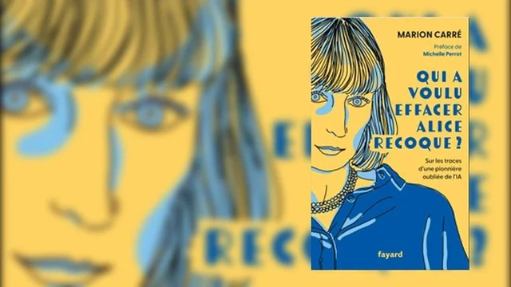

"This distinction is fundamental to understanding what closes Wikipedia's doors to many pioneers. Primary sources can be testimonies, interviews, scientific works, archives or even biographies. The online encyclopedia nevertheless invites the greatest care in their use. They must be 'published reliably (for example, by a publisher or recognized newspaper)'."
Published in February 2024 by Fayard, this work by Marion Carré, co-founder and president of Ask Mona, is printed in France by CPI Firmin Didot, and is part of a collective effort to rehabilitate female figures forgotten or erased from the history of science.

Her book, "Who Wanted to Erase Alice Recoque?", traces the life of a French pioneer of computing, whose exceptional journey was long obscured. Alice Recoque, born in 1929 in Algeria, was a key figure in computer design, programming, and computer security. Marion Carré, after a successful career in computing at Ask Mona, her conferences for the Ministry of Culture, and her works, denounces what she calls the "voluntary or unconscious erasure of women in collective memory". Her book combines investigation, historical analysis, and ethical reflection. It shows how much collective memory must be rediscovered to integrate these forgotten figures. In a context where AI and culture intersect, this work provides essential insight into understanding erasure mechanisms and highlighting the need for their rehabilitation. Her book is a powerful pedagogical tool, an invitation to rethink the way the history of science integrates all voices, especially those of women, sometimes invisible but always fundamental.
Discover an exclusive interview with Marion Carré where she talks about her book, Alice Recoque's journey, and the importance of rehabilitating female figures in the history of science.